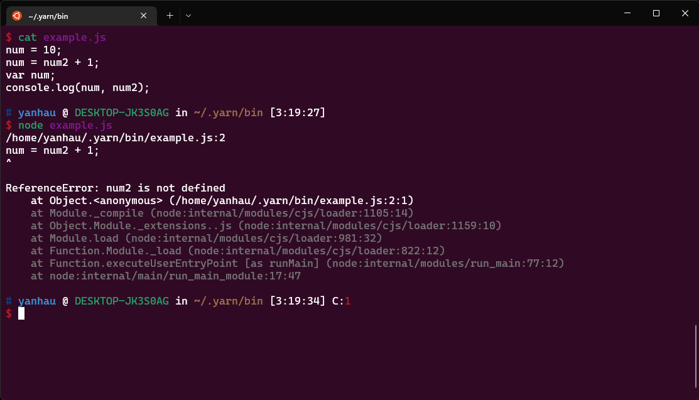
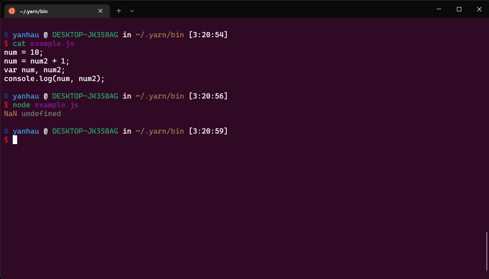

語法速覽
本小節快速說明 JavaScript 的語法，若曾有程式開發經驗，只要快速略過就好
變數宣告
var i = "str"; // 宣告一個變數
let j = 0; // 宣告一個變數, After ES6
const k = 100; // 宣告一個常數, After ES6
/*
* 多行註解
*/
// 單行註解
在早期(ES6以前)，通常使用 var 關鍵字來宣告變數，ES6以後的版本則可以使用 let 或 const 宣告變數，不過 var 以及 let 的行為並不相同，最好都使用 let來宣告，這個問題保留在此處說明1
絕大多數，請優先使用 const 進行宣告，其次才是使用 let 宣告
若要明確聲明一個全域變數，可以用globalThis.locale = "zh-TW" 的方式來宣告，以宣告成員的方式指定一個變數，這可以很好的釐清變數所在的scope
型別字面值
字面值的意思是，直接提供給 JavaScript 變數的值，且不使用建構式初始化， 舉例來說，陣列可以使用以下兩種方式宣告：
let users = ['Alex', 'Bob', 'Claire']; // literals
let users = new Array('Alex', 'Bob', 'Claire'); // constructor
在多數的情況下，最好使用字面值(literals) 來初始化內建型別
- Boolean:
true,false - Numerical：
- (十進制) decimal：
0,100,-123 - (八進制) octal：
015,021,-0o73 - (十六進制) hex：
0x15,0x153,-0xf1A7(a~f 不區分大小寫) - (二進制) binary：
0b11,0b0011,-0b11
- (十進制) decimal：
- Floating：
.123,-.01,0.123,-0.1234,1e-34,1E+12 - String：
'str, asd \n\r',"123 45 a1bd", `template string` - RegExp：
/[a-z]*/ - Array：
[0,1,2,3,4,5] - Object：
{ a: 30, b: "str", c: true }
比較特殊的部分是Template String，他是由兩個 ` 符號構成的字串，可以在其中使用${ expr }嵌入表達式：
const name = "Alex";
const age = 18;
const info = `${name} is ${age} year-old Man`
// 輸出 "Alex is 18 year-old Man"
定義類別
class Rect {
constructor(x1, y1, x2, y2) {
/* 成員在建構式中宣告 */
this.x1 = x1;
this.y1 = y1;
this.x2 = x2;
this.y2 = y2;
}
/* 宣告方法 */
getArea() {
return Math.abs((this.x2 - this.x1) * (this.y2 - this.y1));
}
}
class Rect {
constructor(x1, y1, x2, y2) {
/* 成員在建構式中宣告 */
this.x1 = x1;
this.y1 = y1;
this.x2 = x2;
this.y2 = y2;
}
/* 宣告方法 */
getArea() {
return Math.abs((this.x2 - this.x1) * (this.y2 - this.y1));
}
}
/* 繼承 */
class Square extends Rect {
constructor(x1, y1, x2, y2) {
super(x1, y1, x2, y2); // 呼叫父類別的建構式
}
}
陣列
let numberArr1 = [1,2,3,4,5];
let numberArr2 = new Array([1,2,3,4,5]); // 這是一個二維陣列
let charArr = Array.from("abcdef"); // 若引數是擁有迭代器介面的型別，則可以通過 Array.from 創造一個淺層陣列
// result: charArr = ['a','b','c','d','e','f'];
function range( start, stop, step = 1) {
return Array.from({ length: 1 + (stop - start) / step }, (_, i) => start + (i*step))
}
range(0, 5) // [0,1,2,3,4,5]
分支結構
let condtion = 1;
// if-else
if ( condition ) {
} else {
}
// switch-case
switch( condition ) {
case 0: /* do something */ break;
case 1: /* do something */ break;
case 2: /* do something */ break;
default: break;
}
迴圈結構
let i = 0, j = 0, k = 0;
while( i < 100 ) {
/* do something */
if ( j == 50 ) continue;
if ( k == 60 ) break;
++i;
}
for(let i = 0 ; i < 100 ; ++i) {
/* dosomething */
}
迭代器
let obj = {
a: 1,
b: 2,
c: 3,
d: 4,
key: 5,
index: 6,
};
/* for ... in 存取物件上的 enumable 屬性 */
for(let key in obj) {} // --- s1
for(const key in obj) {
console.log(key) // 依序印出 'a' 'b' 'c' 'd' 'key' 'index'
}
/* for ... of 存取擁有迭代器介面之物件的內容 */
let arr = [1,2,3,4,5,6];
for(let value of arr) {}
for(const value of arr) { // --- s2
console.log(value); // 依序印出 1 2 3 4 5 6
}
雖然可以使用 let 或是 const 來宣告 for...in 與 for...of 存取的屬性 / 值 (如 s1, s2 標示的部分)
但建議都使用 const 來存取，因為存取到變數通常是拷貝的值，而不是副本(C++的 references &)
除非是[{}, {}, {}] 此種內容為物件型別的陣列，才可能通過 value.property = value 進行修改，但是也不會修改到 value 本身的參考
因此使用 const 處理迭代器是較好的選擇
錯誤處理
try {
throw new Error("Error");
} catch (error) {
console.error(error);
}
/* catch 的 error 可以省略 */
try {
throw new Error("Error");
} catch {
console.error("something wrong");
}
以上就是 JavaScript 的常用語法，大部分都是 C-style 的樣子
let 與 var 宣告變數
在 JavaScript 的宣告中，有一個特殊規則 "提升"(hoist)
舉個例子來說：
function sayHello(name) {
console.log(`${name} say: Hello!`);
}
sayHello("Alex");
以及
sayHello("Alex");
function sayHello(name) {
console.log(`${name} say: Hello!`);
}
兩個例子，程式都可以順利運作；對於 C 語言的開發人員，可能不會覺得很特殊
畢竟本來就可以先宣告函式原型，在宣告實作
但是以下的例子，就顯得更特殊一點：
num = 7;
num = num2 + 1;
var num;
console.log(num);

這個例子中，"看起來"好像跟預期的結果一樣，Runtime的時候告訴，並沒有宣告 num2 這個變數，但是修改一樣範例程式碼：
num = 7;
num = num2 + 1;
var num, num2; //多宣告 num2
console.log(num);

令人驚訝的事情出現了，此時並沒有擲出 ReferenceError，程式碼的行為就如同：
var num, num2;
num = 7;
num = num2 + 1;
console.log(num);
因為就像是把宣告給"提升"到區域的最前面，所以該行為才被如此稱呼
對於使用 var 來宣告的變數，所有的宣告都被提至函數的最前面，請注意，僅有宣告，初始化的行為還是在原本的位置：
var x = 1;
console.log(x , y) // 1 undefined
var y = 2;
換句話說，該語法可以解釋成：
var x;
var y;
x = 1;
console.log(x, y);
y = 2;
正如 MDN 宣稱的
這個行為算是該語言的歷史包袱，而在ES6之後，則出現了 let 與 const 關鍵字
有何不同
最大的差異在於，var 的宣告基於 函數(function)，let 與 const 的宣告基於 區塊(block)
舉出兩個例子：
// Example 1
function foo() {
{
/* scope 1 */
var a = 10;
}
{
/* scope 2 */
var b = a + 10;
}
console.log( b );
}
foo() // output: 20
vs
// Example 2
function foo() {
{
/* scope 1 */
let a = 10;
}
{
/* scope 2 */
let b = a + 10; // ReferenceError：a is not defined
}
console.log( b );
}
foo() // ReferenceError：a
兩個行為非常明顯，例子2無須多做解釋，其行為與一般程式撰寫的邏輯相同
而例子一，因為var 基於函數的範圍，因此可以理解成：
function foo() {
var a;
var b;
{
/* scope 1 */
a = 10;
}
{
/* scope 2 */
b = a + 10;
}
console.log( b );
}
foo() // output: 20
因此只要在函數底下的任何區塊，使用 var 宣告，該變數在整個函數內都可以看見，一個簡單的處理方式是使用 IIFE(Immediately Invoked Function Expression)
function foo() {
(function(){
/* scope 1 */
var a = 10;
})();
(function(){
/* scope 2 */
var b = a + 10; // ReferenceError：a is not defined
})();
console.log( b );
}
foo() // ReferenceError：a
透過包裹一層立即調用的函數，把變數給隔離起來
既然問題可以解決，那麼為什麼還需要let 跟 const 呢？
就是為了讓 JavaScript 的行為，更符合現代語言，且 let 還導入了暫時性死區(TDZ) 的概念，防止一個變數在使用前，被其他函數或變數引用
i = j + 10; // 可以運行
var i ,j;
x = y + 10; // ReferenceError
let x, y;
此外，var 宣告很容易沒有注意到，就錯誤的使用，例如在HTML的 <script></script> 撰寫如下的程式碼：
<!DOCTYPE html>
<html lang="en">
<head>
<meta charset="UTF-8">
<meta http-equiv="X-UA-Compatible" content="IE=edge">
<meta name="viewport" content="width=device-width, initial-scale=1.0">
<title>Document</title>
</head>
<body>
</body>
<script>
/* some javascript code */
for(var i = 0; i < n; ++i) { // <-- for 是一個 block, 不是 function, 隱含的宣告了全域變數 i
/* do something */
}
let j = i + 1 // j 的值相當於 i 離開 for迴圈時的值 +1
</script>
</html>
如上圖所示，或者是在 function 宣告時，底下只要不小心使用到 var 宣告，該變數馬上就會變成該函數內可見的變數，另一個原因是，在瀏覽器的行為中，Global區塊使用var 宣告的變數，會被掛載到 window 物件底下：

因此，在現代的 JavaScript 撰寫中，請盡可能避免 var 的使用